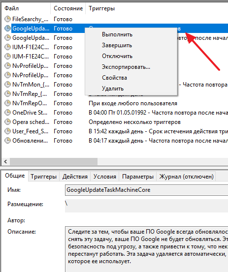
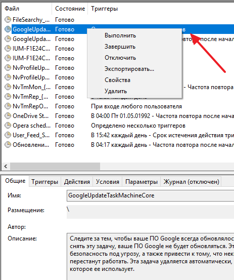

Теория
Здесь представлена теория по дисциплине Операционные системы и Среды.
В настоящее время компьютерные науки стремительно развиваются, и отследить все изменения, даже в некоторой довольно узкой области из этого направления практически невозможно. Начиная читать лекции по операционным системам более 15 лет назад, автор столкнулся с несколькими характерными для данной области знаний проблемами.
Что такое операционная система? Это очень обширное понятие, касающесся всей совокупности программных кодов, которые дают возможность функционировать процессору и другим компонентам и устройствам вычислительной системы.

Для чего же предназначено ядро ОС? Во всех ОС ядро поддерживает работу с накопителями; занимается запуском программ и планированием их исполнения; управлением работы процессора посредством его переключения между выполняемыми задачами; управлением другим периферийным оборудованием, обеспечивая его одновременную работу, а также ядро принимает сообщения и пакеты данных из сети и отправляет их в сеть.
Задача обеспечения выполнения процессов является наиболее важной в ядре любой ОС. Планировщик предназначен для управления доступом процессов ко всем ресурсам компьютера, включая центральный процессор, память, периферийные устройства и сеть. Управление ОС УМХ, осуществляемое планировщиком, основано не только на предоставлении доступа к ресурсам компьютера, но и на предоставлении доступа к подсистемам самого ядра.
 

Для чего же предназначено ядро ОС? Во всех ОС ядро поддерживает работу с накопителями; занимается запуском программ и планированием их исполнения; управлением работы процессора посредством его переключения между выполняемыми задачами; управлением другим периферийным оборудованием, обеспечивая его одновременную работу, а также ядро принимает сообщения и пакеты данных из сети и отправляет их в сеть.
Для чего же предназначено ядро ОС? Во всех ОС ядро поддерживает работу с накопителями; занимается запуском программ и планированием их исполнения; управлением работы процессора посредством его переключения между выполняемыми задачами; управлением другим периферийным оборудованием, обеспечивая его одновременную работу, а также ядро принимает сообщения и пакеты данных из сети и отправляет их в сеть.